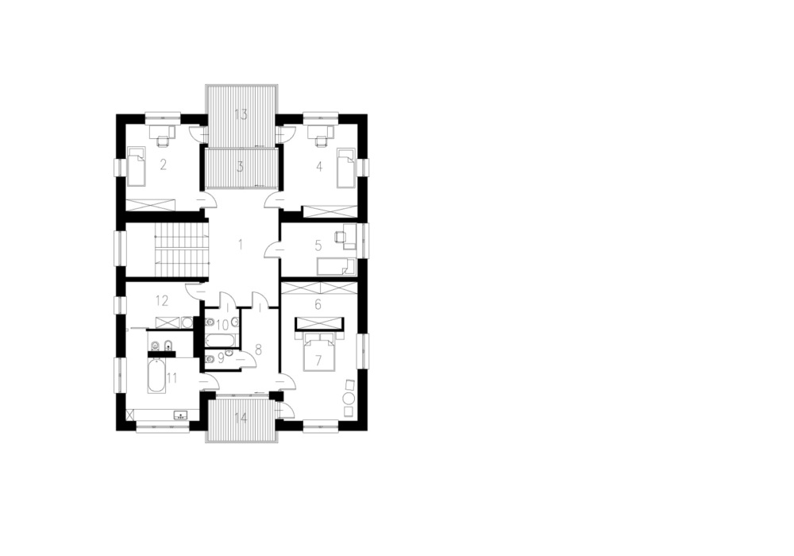
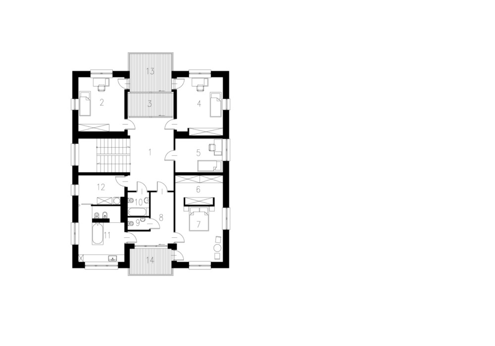

Multi-family Residential
Building with three storeys with a residential function and underground garage, technical and fitness rooms. It is a compact block on a rectangular plan. The characteristic element of all elevations are deep loggias of different dimensions, with walls and balustrades with finish of light wood facade boards
- Location
- Bydgoszcz, Poland
- Client
- EBUD-TBS
- Project team
- Tomasz Słoniowski
- Sylwia Sopińska
- Agata Polkowska
- Project stage
- Architectural design competition
- Date
- Febuary 2015
 
